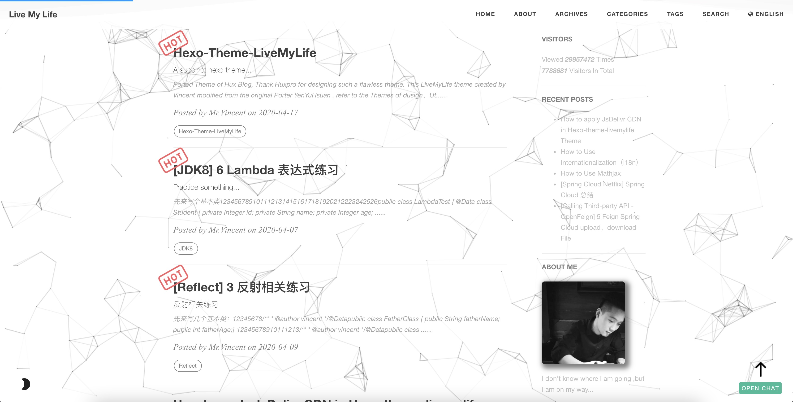

Ported Theme of Hux Blog, Thank Huxpro for designing such a flawless theme.
This LiveMyLife theme created by Vincent modified from the original Porter YenYuHsuan , refer to the Themes of dusign、Utone, Thanks dusign、Utone.
# Repo
Github Repo: https://github.com/V-Vincen/hexo-theme-livemylife
Gitee Repo: https://gitee.com/V_Vincen/hexo-theme-livemylife
# View LiveMyLife Blog ➾

# Quick Start
I publish the whole project for your convenience, so you can just follow the instruction down below, then you can easily customiz your own blog!
Let's begin!!!
# Install Node.js and Git
#For Mac | |
brew install node | |
brew install git |
Windows: Download & install Node.js. -> Node.js
Windows: Download & install Git. -> Git
# Install Hexo
$ npm install -g hexo-cli |
What is Hexo?
Hexo is a fast, simple and powerful blog framework. You write posts in Markdown (or other markup languages) and Hexo generates static files with a beautiful theme in seconds.
# Setup your blog
$ hexo init blog |
More Commands -> Hexo Commands
# Theme Usage
# Init
cd blog | |
rm -rf scaffolds source themes _config.landscape.yml _config.yml package.json yarn.lock #just keep node_modules | |
git clone https://github.com/V-Vincen/hexo-theme-livemylife.git | |
mv hexo-theme-livemylife/* ./ | |
rm -rf hexo-theme-livemylife | |
npm install |
# Set Theme
Modify the value of theme : in _config.yml
# Extensions | |
## Themes: https://hexo.io/themes/ | |
## Plugins: https://hexo.io/plugins/ | |
theme: livemylife |
# Start the Server
hexo generate # or hexo g | |
hexo server # or hexo s |
Starts a local server. By default, this is at http://localhost:4000/ .
More Commands -> Hexo Commands
# Configuration
Modify _config.yml file with your own info, Especially the section:
# Site
Replace the following information with your own.
# Site | |
title: Live My Life | |
subtitle: 淡而无味也是一种味道 | |
author: Mr.Vincent | |
timezone: |
# Internationalization (i18n)
You can use internationalization to present your site in different languages. -> Docs：How to Use Internationalization（i18n）
# Internationalization (i18n) Setting | |
language: # At present, only en、cn and tw are supported. You can customize the language，refer to `languages/en.yml`. | |
- en | |
- cn | |
langselect: | |
enable: true # If open, it will automatically generation lang-select button.This button can jump in articles in different languages, but the articles must have the same name. | |
options: # langselect button display options | |
en: English | |
cn: 简体中文 | |
# tw: 正體中文 | |
i18n_dir: :lang | |
permalink: :lang/:title/ | |
new_post_name: :lang/:title.md | |
# hexo-generator-i18n config | |
## Docs: https://github.com/xcatliu/hexo-generator-index-i18n | |
index_generator: | |
per_page: 10 | |
pagination_dir: page | |
path: '' | |
order_by: -date | |
archive_generator: | |
enabled: false | |
per_page: 10 | |
yearly: true | |
monthly: true | |
daily: false | |
order_by: -date |
English preview:

Chinese preview:

# CDN Settings
JsDelivr is A free CDN for Open Source fast、reliable and automated. How to use Jsdelivr? -> Docs：免费 CDN 提速 Github 静态资源访问
# CDN Setting | |
# Docs: https://www.jsdelivr.com/?docs=gh | |
# If Github Pages deploy，you can ues jsdelivr settings | |
# | |
jsdelivr: | |
jsdelivr_url: https://cdn.jsdelivr.net/gh/ | |
github_username: V-Vincen |
Note: The theme of Hexo-theme-livemylife has a large number of css、js and images, in order to improve access speed, the theme for all of the resource files are made JsDelivr CDN. But only for Github Pages deployment. -> Docs：How to apply JsDelivr CDN in Hexo-theme-livemylife Theme
# Site Settings
Put customized pictures in img directory.
# Site settings | |
SEOTitle: JavaDev | 一如Java深似海 | |
email: hexo-theme-livemylife@mail.com | |
description: "It's an IT blog..." | |
keyword: "Java,v-vincen,v-vincen,livemylife,IT blog,Blog" | |
header-img: img/header_img/newhome_bg.jpg | |
archives-img: img/header_img/archive_bg2.jpg |
# Favicon Settings
favicon: img/avatar/favicon.jpg |
# Signature Settings
Copy your signature image to <root>/img/signature and modify the _config.yml .
signature: true # show signature | |
signature-img: img/signature/<your-signature> |
How to create signature -> Free Online Signature
# Wave Settings
# Wave settings | |
wave: true |
Example:

# SNS Settings
If you don’t want to display it, you can delete it directly.
# SNS settings | |
# RSS: true | |
github_username: V-Vincen | |
twitter_username: V_Vincen_ | |
instagram_username: V_Vincen_ | |
# facebook_username: yourAccount | |
# linkedin_username: yourAccount | |
# zhihu_username: yourAccount | |
weibo_username: WVincen |
# Sidebar Settings
Copy your avatar image to <root>/img/avatar and modify the _config.yml :
sidebar: true # whether or not using Sidebar. | |
sidebar-about-description: "I don't know where I am going ,but I am on my way..." | |
sidebar-avatar: img/avatar/vincnet.jpg # use absolute URL, seeing it's used in both `/` and `/about/` | |
widgets: | |
- visitor # busuanzi: https://busuanzi.ibruce.info/ | |
- featured-tags | |
- short-about | |
- recent-posts | |
- friends-blog | |
- archive | |
- category | |
# widget behavior | |
## Archive | |
archive_type: 'monthly' | |
show_count: true | |
## Featured Tags | |
featured-tags: true # whether or not using Feature-Tags | |
featured-condition-size: 0 # A tag will be featured if the size of it is more than this | |
## Friends | |
friends: [ | |
{ | |
title: "V_Vincen", | |
href: "https://v-vincen.life/" | |
},{ | |
title: "Teacher Ye", | |
href: "http://teacherye.com/" | |
} | |
] |
# Comment Settings
Hexo-Theme-LiveMyLife temporarily supports three Comments. I use gitalk comment system.
# Gitalk
Gitalk is a modern comment component based on GitHub Issue and Preact. See Gitalk for detailed configuration method.
# Gitalk Settings | |
# Doc: https://github.com/gitalk/gitalk/blob/master/readme-cn.md | |
gitalk: | |
owner: # 'GitHub repo owner' | |
admin: # ['GitHub repo owner and collaborators, only these guys can initialize github issues'] | |
repo: # 'GitHub repo' | |
clientID: # 'GitHub Application Client ID' | |
clientSecret: # 'GitHub Application Client Secret' | |
perPage: 10 # Pagination size, with maximum 100. | |
pagerDirection: last # Comment sorting direction, available values are last and first. | |
createIssueManually: false # By default, Gitalk will create a corresponding github issue for your every single page automatically when the logined user is belong to the admin users. You can create it manually by setting this option to true | |
language: en # Localization language key, en, zh-CN and zh-TW are currently available. | |
maxCommentHeight: 250 # An optional number to limit comments' max height, over which comments will be folded.Default 250. | |
proxy: https://cors-anywhere.azm.workers.dev/https://github.com/login/oauth/access_token # GitHub oauth request reverse proxy for CORS. For example, the demo url is 'https://cors-anywhere.herokuapp.com/https://github.com/login/oauth/access_token'.You should deploy your own proxy url as in this issue https://github.com/gitalk/gitalk/issues/429. |
# Gitment
Gitment is a comment system based on GitHub Issues, which can be used in the frontend without any server-side implementation. See Gitment for detailed configuration method.
## Gitment Settings | |
## Doc: https://github.com/imsun/gitment | |
gitment: | |
owner: # Your GitHub ID. Required. | |
repo: # The repository to store your comments. Make sure you're repo's owner. Required. | |
client_id: # GitHub client ID. Required. | |
client_secret: # GitHub client secret. Required. | |
desc: # An optional description for your page, used in issue's body. Default ''. | |
perPage: 10 # An optional number to which comments will be paginated. Default 20. | |
maxCommentHeight: 250 # An optional number to limit comments' max height, over which comments will be folded. Default 250. |
# Disqus
If you want use Disqus, you must have a circumvention (proxy, clime over the firewall) technology.
# Disqus settings | |
disqus_username: your-disqus-ID |
# Analytics Settings
How to config analytics? -> Docs：Analytics and Sitemap Settings
# Analytics settings | |
# Google Analytics | |
ga_track_id: UA-xxxxxx-xx # Format: UA-xxxxxx-xx | |
# Baidu Analytics | |
ba_track_id: ba_track_id |
# Sitemap Settings
How to config sitemap? -> Docs：Analytics and Sitemap Settings
# Google sitemap | |
sitemap: | |
path: sitemap.xml | |
# Baidu sitemap | |
baidusitemap: | |
path: baidusitemap.xml | |
baidu_push: true |
# Go to top icon Setup
My icon is using point, you can change to your own icon at sourcre/css/images .
# Post tag
You can decide to show post tags or not.
home_posts_tag: true |
Example:

# Markdown render
My markdown render engine plugin is hexo-renderer-markdown-it.
# Markdown-it config | |
## Docs: https://github.com/celsomiranda/hexo-renderer-markdown-it/wiki | |
markdown: | |
render: | |
html: true | |
xhtmlOut: false | |
breaks: true | |
linkify: true | |
typographer: true | |
quotes: '“”‘’' |
# Install Mathjax
To install Mathjax, please click How to Use Mathjax for a detailed tutorial.
# Anchorjs Settings
And if you want to change the header anchor '❡', you can go to layout/_partial/anchorjs.ejs to change it. How to use anchorjs, see AnchorJS for detailed examples.
# Anchorjs Settings | |
anchorjs: true # if you want to customize anchor. check out line:26 of `anchorjs.ejs` |
async("//cdn.bootcss.com/anchor-js/1.1.1/anchor.min.js",function(){ | |
anchors.options = { | |
visible: 'hover', | |
placement: 'left', | |
icon: '❡' | |
// icon: 'ℬ' | |
}; | |
anchors.add().remove('.intro-header h1').remove('.subheading').remove('.sidebar-container h5'); | |
}) |
# Article Top
# article top | |
top: true |
Hexo-theme-livemylife has added the article top function, just add sticky: number configuration to your markdown notes, articles are sorted by this number.
Example:

# WordCount Settings
A Word Count Plugin for Hexo. See WordCount for detailed configuration method.
# Dependencies: https://github.com/willin/hexo-wordcount | |
# Docs: https://www.npmjs.com/package/hexo-wordcount | |
wordcount: true |
# Busuanzi Settings
Busuanzi is a website traffic statistics plugin. How to use Busuanzi, see Busuanzi for detailed examples.
## Dependencies: https://busuanzi.ibruce.info/ | |
## Docs: https://ibruce.info/ | |
busuanzi: true |
# Top scroll progress
# top scroll progress | |
scroll: true |
# Tip
tip: | |
enable: true | |
copyright: Say what you think... # If the copyright is blank, the default value will be used. |
# Social Share Post
#Docs: https://github.com/overtrue/share.js | |
share: true |
# Viewer Config
Viewer is a simple jQuery image viewing plugin. Let us first look at a demo. See Viewer for detailed configuration. If you want to modify the options of Viewer, you can go to sourcre/js/viewer/pic-viewer.js to change it.
# Viewer config | |
viewer: true |
# Theme Color Config
Hexo-Theme-LiveMyLife temporarily supports two themes color.
# ThemeColor config | |
themecolor: | |
enable: true | |
mode: dark # themecolor mode light or dark, default light |
Light theme preview:

Dark theme preview:

# Mouseclick Config
# Mouseclick config | |
mouseclick: | |
enable: true | |
content: | |
- The first step is as good as half over... | |
- Laugh and grow fat... | |
- Man proposes God disposes... | |
- When all else is lost the future still remains... | |
- Wasting time is robbing oneself... | |
- Sharp tools make good work... | |
- Cease to struggle and you cease to live... | |
- A friend in need is a friend indeed... | |
- Faith can move mountains... | |
color: | |
- '#9933CC' | |
- '#339933' | |
- '#66CCCC' | |
- '#FF99CC' | |
- '#CCCCFF' | |
- '#6666CC' | |
- '#663399' | |
- '#66CC99' | |
- '#FF0033' |
Mouseclick preview:

# Ribbon Config
ribbonDynamic: true |
Ribbon preview:

# BgLineCanvas Config
bglinecanvas: true # The special effects will take up a lot of cpu resorces, please open it carefully. |
BgLineCanvas preview:

# Search Settings
# Dependencies: https://github.com/V-Vincen/hexo-generator-zip-search | |
search: | |
enable: true | |
path: search.json | |
zipPath: search.flv | |
versionPath: searchVersion.json | |
field: post | |
# if auto, trigger search by changing input | |
# if manual, trigger search by pressing enter key or search button | |
trigger: auto | |
# show top n results per article, show all results by setting to -1 | |
top_n_per_article: 1 |
# Gitter
Gitter is a chat and network platform that helps manage, develop and connect communities through messages, content and discovery. See Gitter for detailed configuration method.
## Docs:https://gitter.im/?utm_source=left-menu-logo | |
## | |
gitter: | |
room: your-community/your-room |
# Deployment
Replace to your own repo!
deploy: | |
type: git | |
repo: https://github.com/<yourAccount>/<repo> # or https://gitee.com/<yourAccount>/<repo> | |
branch: <your-branch> |
# Hexo Basics
Some hexo command:
hexo new post "<post name>" # you can change post to another layout if you want | |
hexo clean && hexo generate # generate the static file | |
hexo server # run hexo in local environment | |
hexo deploy # hexo will push the static files automatically into the specific branch(gh-pages) of your repo! |
# Have fun _
Please Star this Project if you like it! Follow would also be appreciated! Peace!